The 12 Horary Points
One horary acupressure point for each two-hour window, aligned to your destination time.
JetLagPro shows the ideal horary point for the active window—or a reachable alternative when you are in a tight seat.
What are horary points?
Timed acupressure for travel uses twelve horary points—one traditional point per two-hour block on the twenty-four-hour schedule. JetLagPro follows destination time, not home time, and reminds you which point to press for the window you are in now.
The two-hour schedule

The wheel shows the day divided into twelve two-hour slices. Each slice has one horary point.
Ideal horary points vs. cramped-seat alternatives
Five of the classical horary points are on the feet or behind the knees—hard to reach in a middle seat. The app can show reachable alternatives on the same two-hour window instead of skipping that window entirely.
In the Info tab, turn Cramped seating points on for those substitutes. Turn it off when you have room for the ideal horary points. Timing stays the same either way.
The twelve horary points
One point per two-hour window on destination time. Photos match the app guide; five windows swap to reachable alternatives when Cramped seating points is on.
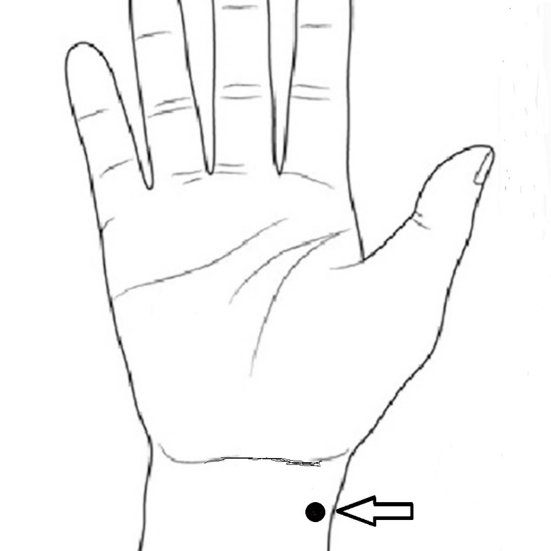
Find the depression about 1 inch above the wrist just inside the bone.
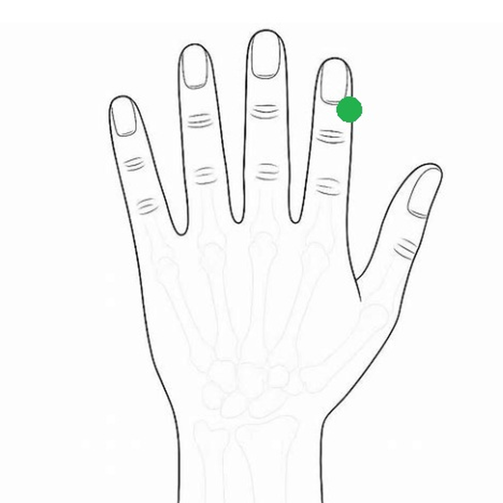
This point is on the thumb side of the index finger, at the top corner of the nail.
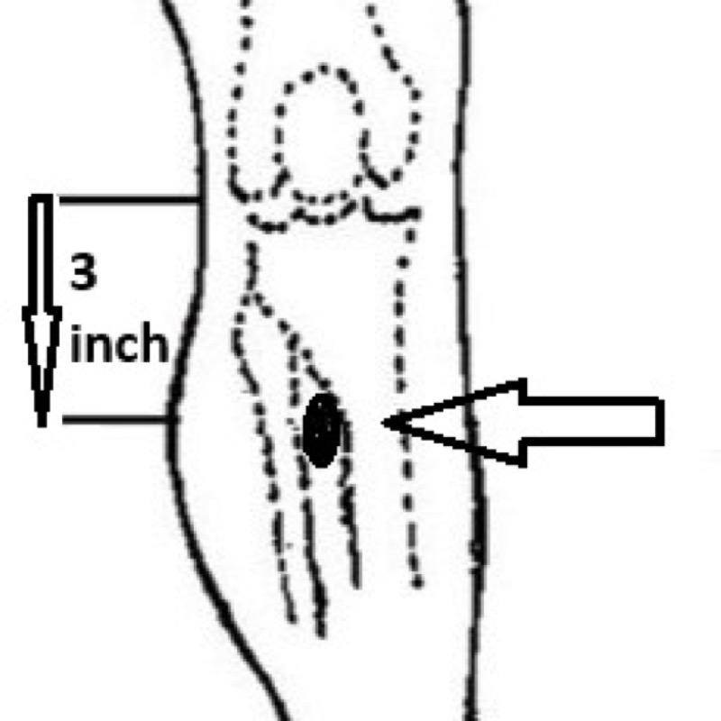
This point is about 3 inches below the kneecap between the shin bone and the fibula. It may be sore when you press into it.
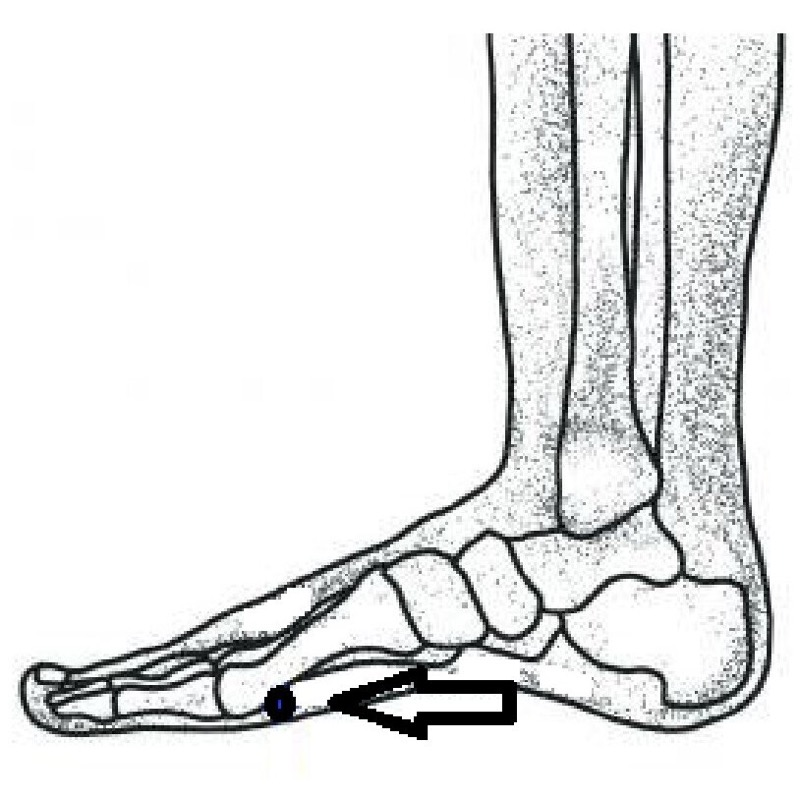
This point is along the inside edge of your foot where a big bump starts before you reach the big toe.
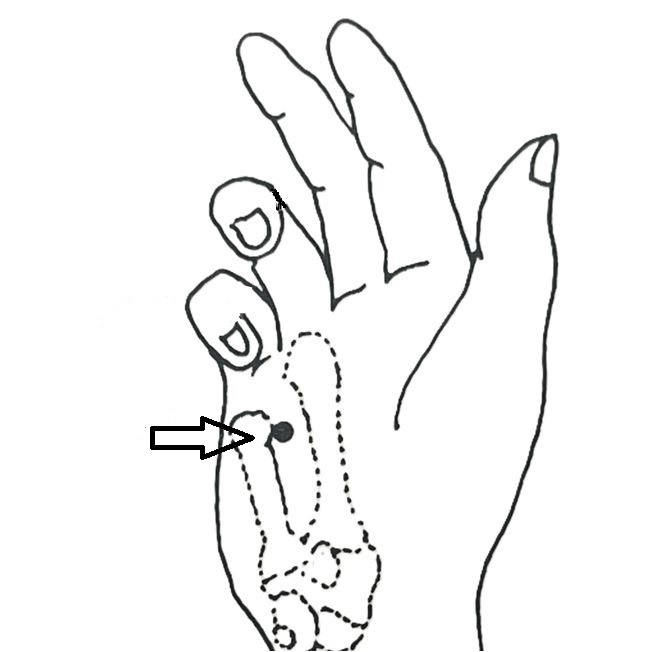
On the palm of your hand, find the big crease. The point is where your pinky touches the crease between the bones.
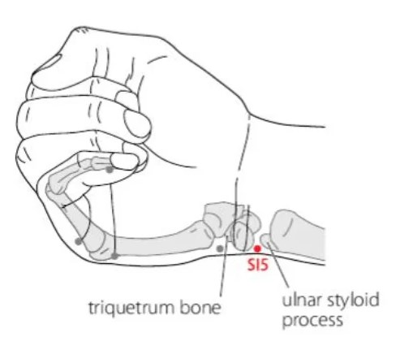
Bend your elbow so your thumb points to your nose. Use your index finger to find the depression on the pinky side where the arm bone meets the wrist.
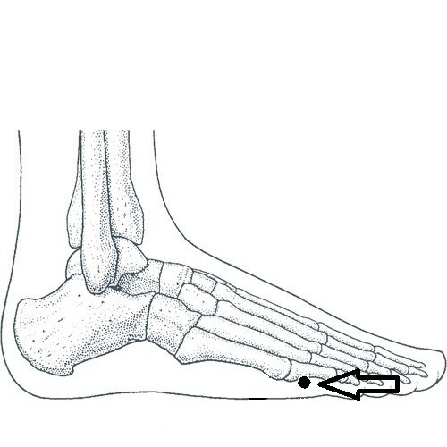
On the outside edge of the foot where the small toe meets the larger bone.
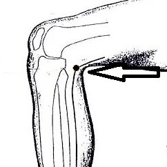
While sitting, find the sore spot at the top of your bottom leg as shown in the video.
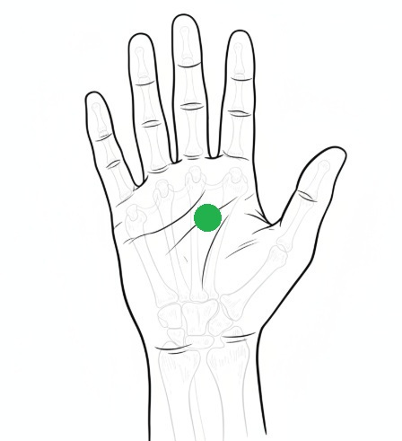
Find the place on the long crease on your palm where your middle finger touches it.
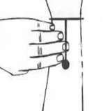
With your hand facing down, raise your fingers to find your wrist crease. Put four fingers on the wrist crease. The point is above the top finger, between the two arm bones.
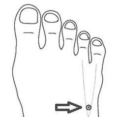
Rest your foot on your knee. The point is between the small and fourth toe at the top of the first depression you find when moving up from the toes.
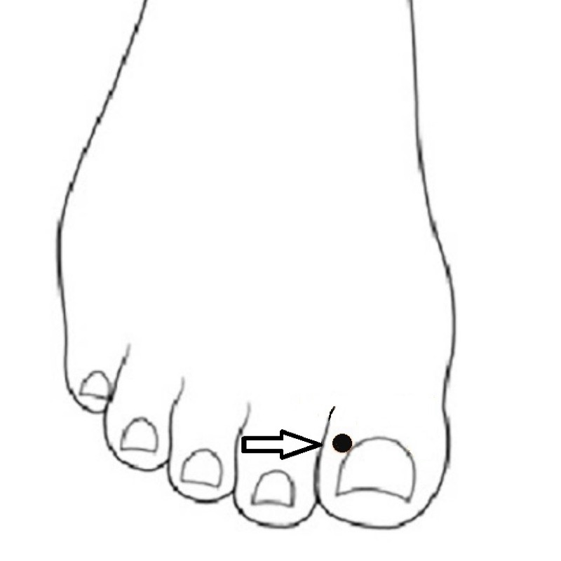
On the big toe, on the inside edge, about 0.1 inch from the corner of the nail.
Location and technique videos are in the app. For the full schedule walkthrough, read how the 2-hour schedule works.
Background: The science · Timed acupressure · 2-hour schedule · Preview in browser